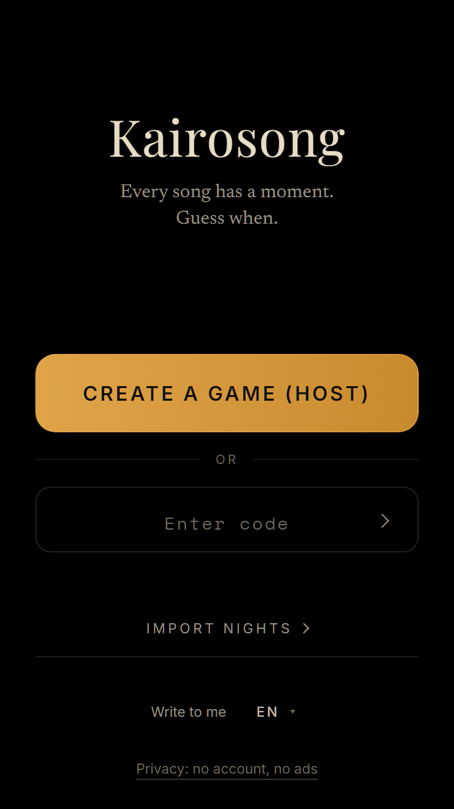
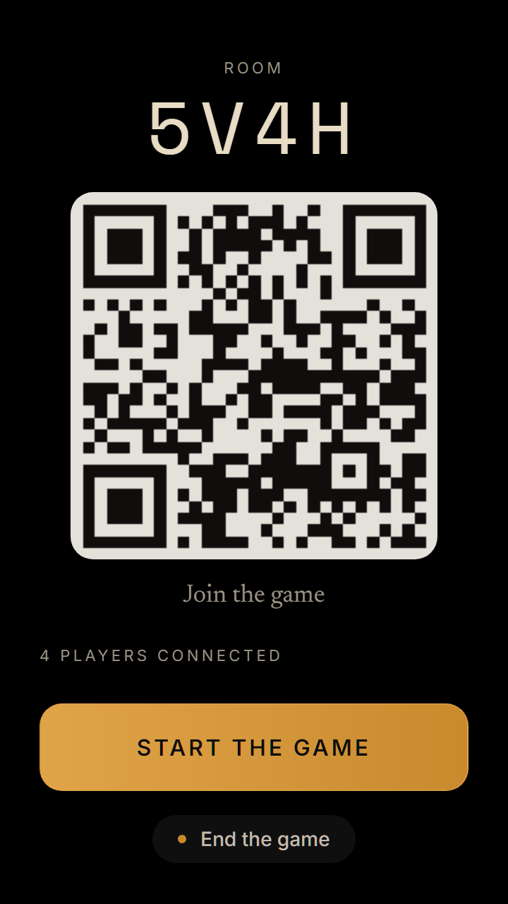
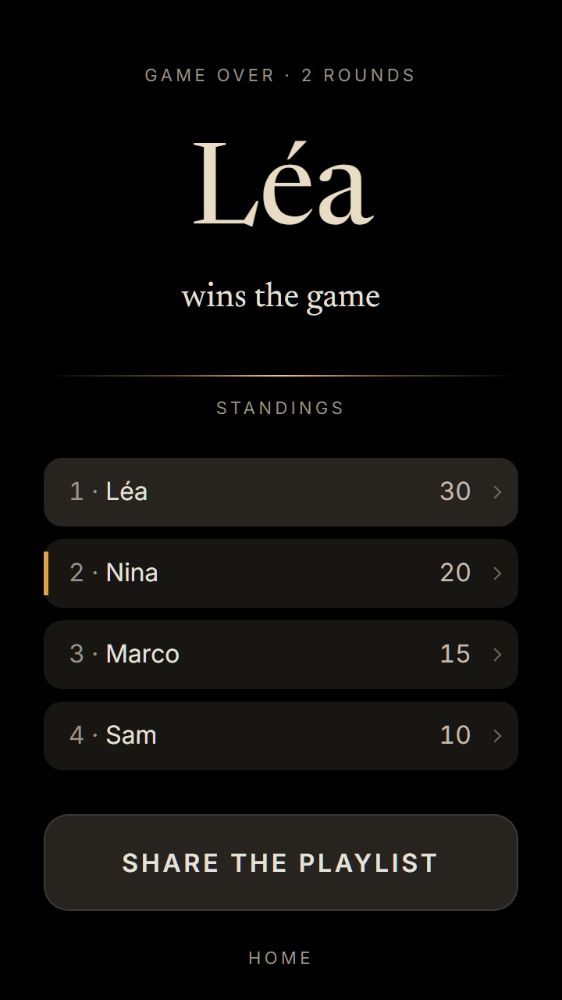

Kairosong
Every song has its time.
Guess when.
Three notes in, and someone’s already off: “That was the summer we…” Someone else swears those drums can only be the eighties.
Kairosong makes a party game out of that instinct. The music plays on your speaker, the app listens, and everyone guesses the year it came out.
Free · No account · Nothing to install · Join by QR
The heart of the game
You don’t know the year. You know where you were.
Nobody remembers release dates. But a song brings back a kitchen, a back seat, a high school hallway, a wedding where you danced far too late. Graduation, your first apartment, that car: the memories start to line up.
Then there’s what your ear knows without ever being taught. That snare drowned in reverb has to be the eighties; that yowling wah-wah has the early seventies written all over it; that icy synth is pure new wave. The grain of a mix, a way of playing, a scene that had its hour: every era leaves its fingerprints on the record.
You listen, you piece it together, you call a year. Then the answer lands. Sometimes spot on. Sometimes the song from your childhood was already twenty years old when you first heard it.
How it works
Three beats, like a waltz
The music plays
Your speaker, your turntable, the kitchen radio, the sound system at the bar. Kairosong doesn’t play a thing: you’re the DJ.
Kairosong listens in
A few seconds through one phone’s mic is all it takes to know the song. The clip is thrown away right after.
Everyone guesses
Memory, ear or a wild hunch: each player sets a year on their own phone. Once all bets are in, the host reveals the title, the artist, the cover, the year, and how far off each of you landed, all on the same timeline.
The word
Kairos. The Greeks had two words for time. Chronos, the kind that ticks by. Kairos, the kind that counts: the right moment, the one you know when it comes.
A song often holds one. Kairosong goes looking for it.
What you need
Music, and your people
Something that plays
A speaker, a turntable, a TV, a car stereo with the doors flung open. If the room can hear it, so can Kairosong.
A phone each
The host starts a game and shows a QR code; everyone else scans it. No app to download, no account to create.
The rules
The closer you get, the more it counts
- Spot on15pts
- Within 2 years10pts
- Within 5 years5pts
- Within 10 years2pts
The fine print
- You’re guessing the year the song first came out. A live recording, a remaster, a reissue won’t make it any younger: Billie Jean live in 1988 is still 1982.
- A cover by someone else, or a remix: that’s another story, with its own year.
- If it wasn’t the original version playing, the reveal says so, and names the one you heard.
- Song not recognized? The host listens again or moves on to the next one. Nobody loses points.
Screens
From the first scan to the last song

The home screen 
The lobby: one QR code, and everyone’s in The reveal, then the story behind the song 
The end-of-night recap
What stays
The morning after, the playlist’s still there
Star a song during the game and it’ll be waiting in your notebook. Every night is kept there, song by song: on your phone, and nowhere else.
Questions
Before you press play
Does Kairosong play the music?
Never. It listens to whatever’s already playing. A few seconds go to the recognition service, then the clip is destroyed: nothing is kept.
Is it a name-that-tune game?
Almost, but back to front: here, we hand you the title at the end. What you’re after is the year.
What if I know nothing about music?
It’s not about knowing dates, it’s about remembering: where you were, who sang along way too loud, what you were doing that year. And your ear knows more than you think: a drum sound, a synth, a way of producing a record often gives away its era. The best players aren’t always the music buffs.
Do I need Spotify?
No. Streaming, vinyl, CD, cassette, radio: if the room can hear it, so can Kairosong.
Is it free?
Yes, completely. No ads, no subscription, no account.
Does it work on iPhone?
Yes, in Safari, for the host and for every player. One exception: DJ mode on a single phone, playing and listening on the same device, needs Android.
How many players?
Two makes a duel. Ten makes a party. One phone each, as many as you like.
What about my data?
No account, no email: your name is temporary and goes away with the game. Everything else is on the privacy page.
Ready when the music is.
Play